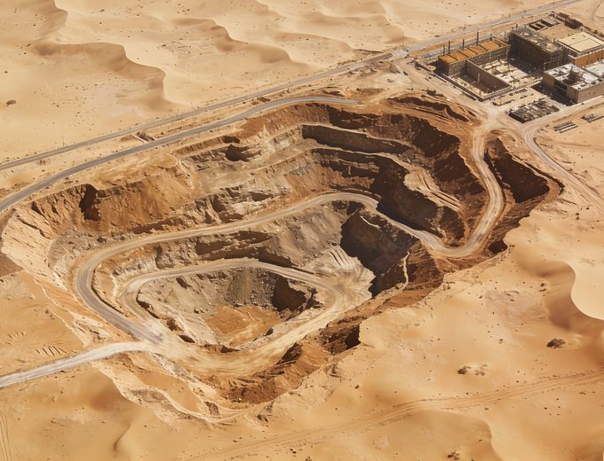
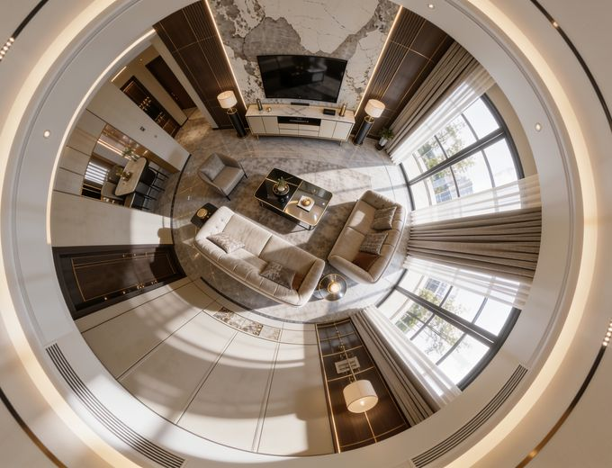
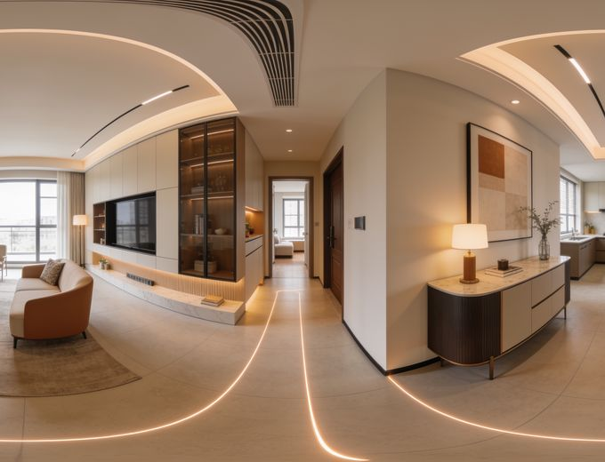

Built for the biggest things people build.
The larger and more ambitious the development, the harder it is to sell, govern and coordinate on flat drawings. That's exactly where a living model earns its place — and where Urban Decoders does its best work.
Reserve units before the show apartment exists.
Give developers and sales teams immersive tours, VR journeys and launch films that let buyers commit off-plan with confidence — from a single tower to a full community.
- Off-plan sales tours & VR journeys
- Launch-day films, stills & 360° panoramas
- Interactive unit-selection touch tables
Govern the plan in a shared, living model.
Authorities use our digital twins to test masterplans, run stakeholder reviews and communicate to the public — with zoning, transit, daylight and context all in one always-current model.
- City-scale digital twins to LOD 3
- Planning & public-consultation experiences
- Scenario testing for transit, daylight & massing
Coordinate the impossible, visually.
For master-planned communities and new districts, we twin the entire development so hundreds of stakeholders share one spatial source of truth across years of phased delivery.
- Multi-phase masterplan twins
- Investor & partner immersive briefings
- Progress capture synced to construction

Sell the stay before the doors open.
Resorts, hotels and branded residences use cinematic tours and immersive installations to pre-sell rooms, memberships and events with the emotion of an actual visit.
- Cinematic resort & suite walkthroughs
- Event & F&B space configurators
- Branded-residence sales experiences

Rehearse the terminal years early.
Airports and aviation brands visualize terminals, lounges and passenger journeys in 3D — aligning stakeholders and testing wayfinding long before the concrete is poured.
- Terminal & lounge experience visualization
- Passenger-journey & wayfinding simulation
- Stakeholder & retail-partner briefings

Model the waterfront and everything on it.
Ports, marinas and waterfront developments use city data and twins to plan operations, showcase berths and coordinate complex mixed-use waterfronts.
- Port & marina digital twins
- Waterfront mixed-use sales experiences
- Operational planning & simulation
Your sector, decoded into experience.
Whatever you're developing at scale, we'll help the people who matter walk it, test it and buy into it early.